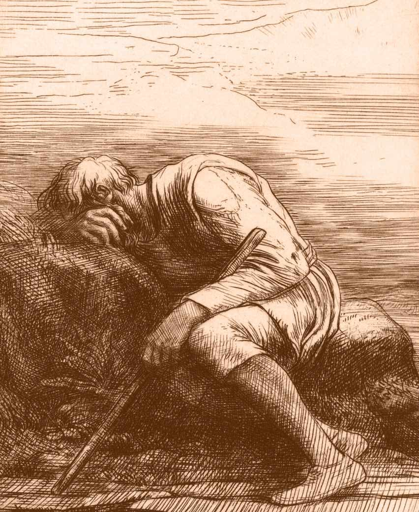

O Que Fazer Depois do Rompimento
Como todo o mundo, eu fiz a coisa errada nas primeiras horas depois do meu ex romper comigo. Eu implorei. Eu fugi, voltei, e fugi de novo. Eu liguei sem parar. Eu escrevi coisas malucas. Eu chorei para o meu ex. Eu quis me matar. Eu estava certa que a minha vida estava terminada.
Este site é um guia longo e detalhado para recuperar-se tão rápido quanto possível depois de um rompimento ou divórcio e sair disso forte e completo. A medida que você passar pelo processo de recuperação, eu espero que você possa beneficiar-se de todos os detalhes de cada artigo.
Mas nas primeiras horas depois do rompimento, eu sei que você está em choque e mal pode pensar direito. Então, este é um plano de emergência muito curto do que você deveria fazer imediatamente, começando agora. Quanto mais perto você chegar deste plano agora, melhor sua vida será mais tarde.
Corte todo contato com o seu/sua parceira. Isto é urgente. Qualquer contato que você tiver com ele ou ela agora vai ser ruim. Você está tão emotiva que qualquer coisa que dizer ou fizer só fará as coisas piorarem.
Nenhum telefonema, nenhum sms, absolutamente nenhuma comunicação. Bloqueie ele ou ela em toda mídia social.
Mais uma vez: nada. Nenhum contato, nem uma palavra.
Se ele ou ela estiver tentando ligar para você, não atenda. Mande uma mensagem de texto muito curta. Sinto muito, mas realmente não posso falar agora. Entro em contato com você quando estiver pronta.* Nada mais que isso; nada pessoal, nada sobre os seus sentimentos, sem perguntas. Nada.
E então desligue o telefone ou bloqueie o seu número.
Eu sei que parece frio, mas lembre-se: o seu parceiro/parceira acabou de romper com você. Você não tem mais nenhuma obrigação com ela ou ela.
E quanto as chances de reconciliação, cortar qualquer contato agora ajudará você significativamente e evitará que você faça qualquer coisa que você vai se arrepender mais tarde.
Ligue para os amigos ou família e peça ajuda.Você não deve ficar sozinha. Não esteja em lugar algum perto do seu parceiro ou parceira. Se você viver com o seu parceiro, faça as malas e vá ficar com a família ou amigos. Se você trabalhar com o seu parceiro, tire um dia de folga e parta imediatamente.
Fique quieta. Se você estiver indo encontrar ou ficar com amigos ou família, definitivamente vá. Saia para um passeio se quiser. Mas sem dirigir desnecessariamente; você não está em estado de dirigir um carro. E sem viagens espont'neas para lugar algum; só vai complicar a sua vida ainda mais.
Sem violência. Nem contra o seu ex, nem contra você mesma. Se você estiver pensando em suicídio, eu compreendo, eu já passei por isto também. Mas, vamos lá, leia este site todinho do começo ao fim; eu acho que lhe ajudará a entender melhor o que está acontecendo com você.
Não pule direto nos braços de outra pessoa. Você não conseguirá nenhum conforto, não serve para nenhum propósito para você ou como vingança, e pode causar sérios problemas para você, seu parceiro, e a nova pessoa. Você pode pensar em relacionamentos de compensação mais tarde, mas só vai ser um desastre se você começar na seqüência imediata de um rompimento... Fique com amigos, não um/uma amante.
Álcool, drogas, comida. Todo o mundo tem o seu escape de preferência. Mais tarde na estrada, você não deve fazer nada disso. Mas nas primeiras horas do dia depois de um rompimento, não seria realista e seria contraproducente discursar que você não deve. só use moderação. Sem dirigir. E fique com um amigo.
Se você estiver seguindo todos estes passos agora, parabéns. Você já está fazendo muito melhor que 99% das pessoas seguindo um rompimento. Vai ajudar muito.
Quando eu fui rejeitada, eu odiava todos os chavões e clichês que as pessoas me falavam que eu estaria bem e tudo seria ótimo. Então eu não vou me incomodar em lhe dizer isto.
Ao invés disso, eu simplesmente sugiro que você dê uma olhada neste site quando estiver pronta/pronto e aprenda sobre a fisiologia do que você está sofrendo, como lidar com a dor, e passos para sentir-se melhor. Use a barra de navegação abaixo para ir para a lista de tópico para este site, ou pule direto no primeiro artigo.